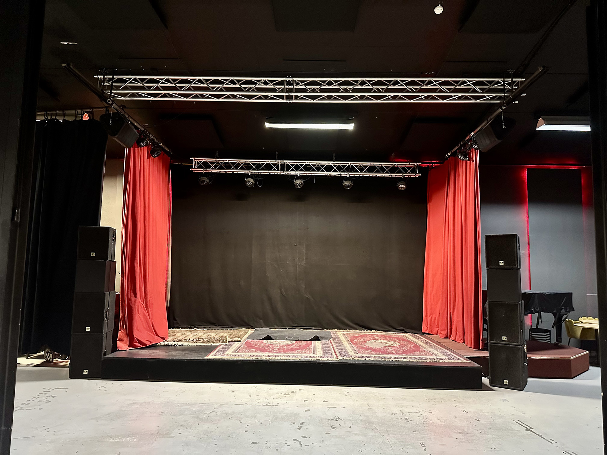

Conference Venue
The Audiovisual Symposium will be held at Norrköping Visualization Center C about 15 minutes walking distance from the train station.

All presentations and some performances will take place in the dome theatre. More technical details about the sound and visual capabilities of the dome will be provided here later.
Afternoon coffee or tea on Thursday, 26 November, as well as mid-morning coffee or tea and lunch on Friday, 27 November, are included in the conference registration and will be served at the Visualization Center.
Evening Session
The conference dinner will be held at Kulturkvarteret Hallarna, approximately a 7-minute walk from the Visualization Center. Some contributions will also be performed there. The food (entirely vegan) will cost around 200 SEK, and the venue has a bar. The cost of the dinner is not included in the registration.

More technical details about the sound and visual capabilities of the dome will be provided here later.